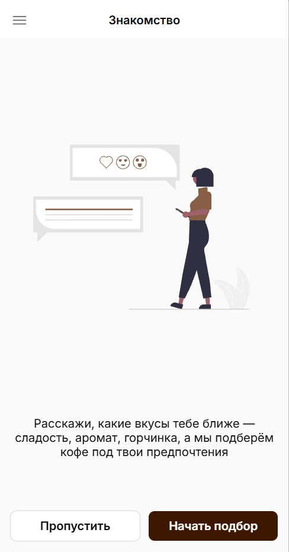
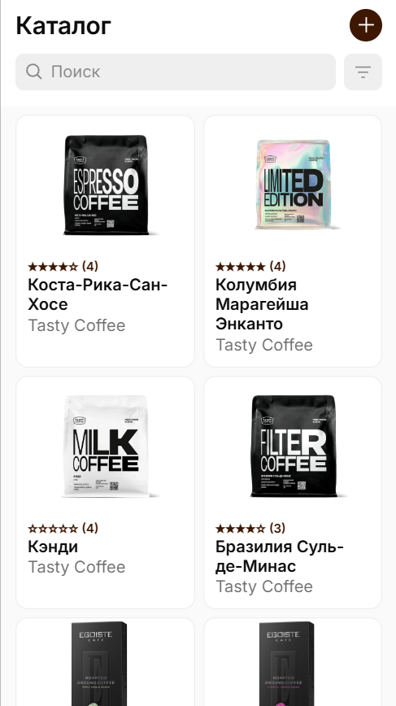
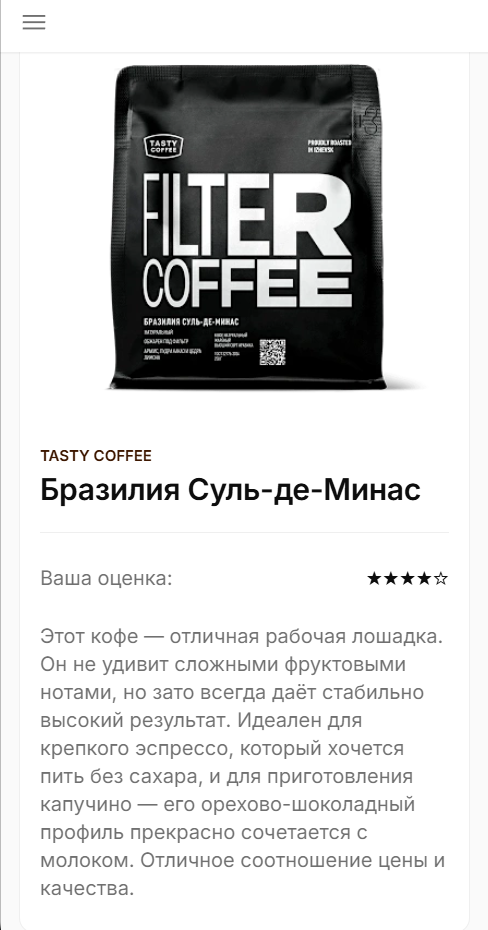

Kavva
Kavva - приложение, которое подбирает кофе под ваши предпочтения. Экономьте до 6 часов в год и 12 000 ₽ на неудачных покупках.
Выбор кофе — это лотерея?
67% кофеманов тратят до 6 часов в год на выбор и теряют 12 000 ₽ на неудачных покупках. Вы заслуживаете уверенности, а не случайного результата.
0 часов
в год на выбор кофе0 ₽
ежегодные потери0 %
разочарований во вкусеKavva ставит выбор кофе на алгоритмы
Мы заменяем догадки на точные рекомендации. Расскажите о своих предпочтениях один раз, и наша система будет учиться вместе с вами, находя ваши идеальные сорта.
-

Создайте цифровой вкусовой профиль
Отметьте, что вам нравится: сладость, кислотность, тело, ароматные ноты
-

Получайте персональные подборки
Наш ИИ анализирует ваш профиль и тысячи отзывов, чтобы предложить вам вкусный кофе с вероятностью успеха до 90%
-

Открывайте, оценивайте, совершенствуйте.
Ставьте оценки, и следующие рекомендации станут еще точнее. Ваш вкус эволюционирует — и Kavva эволюционирует вместе с вами
Не просто рекомендации. Это ваш персональный бариста на основе ИИ
ИИ
Алгоритмы коллаборативной фильтрации, которые учатся на ваших оценках и предпочтениях тысяч других пользователей.
Язык вкуса
NLP-анализ отзывов выявляет реальные вкусовые ноты и ощущения, а не маркетинговые описания.
Объективная шкала
Стандартизированная система оценок (SCA) убирает субъективность и помогает сравнивать "яблоки с яблоками".
Присоединяйтесь к сообществу Kavva
Начните пить кофе, созданный для вас. Присоединяйтесь к сообществу Kavva - там, где технологии встречаются со вкусом